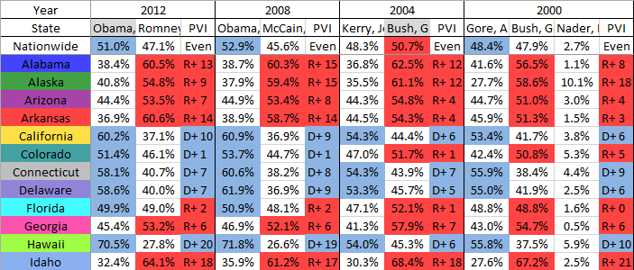

There is lots of data available for the 2016 and 2012 presidential elections, broken down to the county level.
The other election years can typically be found in the form of PDFs, and have to be manually converted. Finding a comprehensive list of election results for multiple years is challenging. Stephen Wolf of the Daily Kos has created an Excel spreadsheet from Dave Leip's Atlas, which gives the election results back as far as 1828.
The trouble is, the Excel sheet is difficult to import into Pandas. 
Note the data is wide, with a multiple headers. The Year spans multiple columns, which is then broken down by candidate. Also note that some years have two candidates, while other years have three or more.
The data shown in the screenshot are shown by percentages of the vote. If we scroll across to column HG, the votes are reported again in raw numbers.
Our goal is to read the data into the following format:
year,state,votes,candidate,party,short_state
2016,Alabama,729547,"Clinton, Hillary",Democratic,AL
2016,Alaska,116454,"Clinton, Hillary",Democratic,AK
2016,Arizona,1161167,"Clinton, Hillary",Democratic,AZ
2016,Arkansas,380494,"Clinton, Hillary",Democratic,AR
2016,California,8753788,"Clinton, Hillary",Democratic,CA
2016,Colorado,1338870,"Clinton, Hillary",Democratic,CO
2016,Connecticut,897572,"Clinton, Hillary",Democratic,CT
In this post we will walk through the main steps, but a repository including the full code for processing this data set is available here.
Dealing with a MultiIndex
Let's start with a simplified excel spreadsheet with the following format:
| Year | 2012 | 2008 | ||||
|---|---|---|---|---|---|---|
| State | Total | Obama, Barak - Democratic | Romney, Mitt - Republican | Total | Obama, Barak - Democratic | McCain, John - Republican |
| Alabama | 2074338 | 795696 | 1255925 | 2099819 | 813479 | 1266546 |
| Alaska | 300495 | 122640 | 164676 | 326197 | 123594 | 193841 |
Note that the sum of the "major" candidates don't sum to the totals. Presumably there are some write-ins that are not counted.
We have also skipped the percentages that occurred at the beginning of the real spreadsheet. Our goal here is to be able to unpack the multiindex.
Let's start by reading in the dataset. We don't try and name the headers.
import pandas as pd
df = pd.read_excel(filename, header=None)
Our dataframe now looks like
| Year | 2012 | NaN | NaN | 2008 | NaN | NaN |
|---|---|---|---|---|---|---|
| State | Total | Obama, Barak - Democratic | Romney, Mitt - Republican | Total | Obama, Barack - Democratic | McCain, John - Republican |
| Alabama | 2074338 | 795696 | 1255925 | 2099819 | 813479 | 1266546 |
| Alaska | 300495 | 122640 | 164676 | 326197 | 123594 | 193841 |
The merged cells have been split, and the year only appears in the first one. The other cells have been replaced by NaNs.
Now let's make a MultiIndex using the first two rows (year and candidate). Let's start by replacing the NAs using ffill (foward fill). This moves the last non-null value "forward" over null values:
multi_index_values = df.ffill(axis=1).values[:2, 1:]
Note that when we only kept the first couple of columsn, and dropped the first row. Now multi_index_values is
| 2012 | 2012 | 2012 | 2008 | 2008 | 2008 |
|---|---|---|---|---|---|
| Total | Obama, Barak - Democratic | Romney, Mitt - Republican | Total | Obama, Barack - Democratic | McCain, John - Republican |
Let's make a multi-index, and make a dataframe out of it. Recall the first two rows included the headers, so we are copying the index from row 2 down. We are making the state (i.e. column 0) the row index.
multi_index = pd.MultiIndex.from_arrays(multi_index_values, names=['year', 'CANDIDATES'])
multi_df = pd.DataFrame(df.values[2:, 1:], index=df.values[2:, 0], columns=multi_index)
Now our dataframe in pandas is almost in the same layout as the original worksheet.
| Year | 2012 | 2008 | ||||
|---|---|---|---|---|---|---|
| CANDIDATES | Total | Obama, Barak - Democratic | Romney, Mitt - Republican | Total | Obama, Barak - Democratic | McCain, John - Republican |
| Alabama | 2074338 | 795696 | 1255925 | 2099819 | 813479 | 1266546 |
| Alaska | 300495 | 122640 | 164676 | 326197 | 123594 | 193841 |
Unstacking
We have the problem that our columns are actually names of variables. At the top level of the column index, we have the years. At the lower level, we have the candidates. We can undo this with the unstack command:
unstacked_df = multi_df.unstack()
Here unstacked_df has the form
2012 Obama, Barack - Democratic Alabama 795696
Alaska 122640
Romney, Mitt - Republican Alabama 1255925
Alaska 164676
2008 Obama, Barack - Democratic Alabama 813479
Alaska 123594
McCain, John - Republican Alabama 1266546
Alaska 193841
Calling unstacked_df.reset_index() fills out the columns:
year CANDIDATES level_2 0
2012 Obama, Barack - Democratic Alabama 795696
2012 Obama, Barack - Democratic Alaska 122640
2012 Romney, Mitt - Republican Alabama 1255925
2012 Romney, Mitt - Republican Alaska 164676
2008 Obama, Barack - Democratic Alabama 813479
2008 Obama, Barack - Democratic Alaska 123594
2008 McCain, John - Republican Alabama 1266546
2008 McCain, John - Republican Alaska 193841
We can separate the candidate and party information with the following lines:
unstacked_df['candidate'] = unstacked_df.CANDIDATES.str.split('-').str[0].str.strip()
unstacked_df['party'] = unstacked_df.CANDIDATES.str.split('-').str[1].str.strip()
unstacked_df.drop('CANDIDATES', axis=1, inplace=True)
The final product
Once we have this, a rename on the columns level_2 and 0 give us
year state votes candidate party
0 2012 Alabama 795696 Obama, Barack Democratic
1 2012 Alaska 122640 Obama, Barack Democratic
2 2012 Alabama 1255925 Romney, Mitt Republican
3 2012 Alaska 164676 Romney, Mitt Republican
4 2008 Alabama 813479 Obama, Barack Democratic
5 2008 Alaska 123594 Obama, Barack Democratic
6 2008 Alabama 1266546 McCain, John Republican
7 2008 Alaska 193841 McCain, John Republican
This is a simplified process. We didn't show the join to create the "short state code", or show how to skip the columns in the spreadsheet that contain the percentages. A complete description of the process can be found in this github repo. If you are just interested in the results, you can find them in this gist instead.